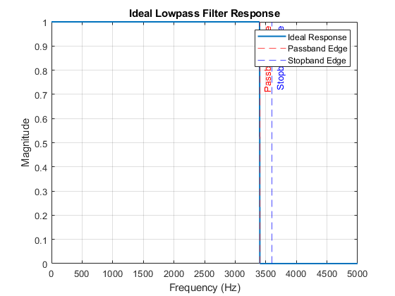

Contents
% Parameters fs = 10000; % Sampling Frequency in Hz omega_p = 0.68 * pi; % Passband edge (rad/sample) omega_s = 0.72 * pi; % Stopband edge (rad/sample) delta_p = 0.01; % Passband ripple tolerance delta_s = 0.01; % Stopband ripple tolerance
(a) Sketch the Ideal Filter
f_p = omega_p * fs / (2 * pi); % Passband edge in Hz f_s = omega_s * fs / (2 * pi); % Stopband edge in Hz % Frequency range and ideal response frequencies = linspace(0, fs/2, 1000); % Frequency range (0 to Nyquist) response = zeros(size(frequencies)); % Initialize response response(frequencies <= f_p) = 1; % Passband response(frequencies >= f_s) = 0; % Stopband % Plot ideal lowpass filter template figure; plot(frequencies, response, 'LineWidth', 1.5); hold on; xline(f_p, '--r', 'Passband Edge'); xline(f_s, '--b', 'Stopband Edge'); title('Ideal Lowpass Filter Response'); xlabel('Frequency (Hz)'); ylabel('Magnitude'); grid on; legend('Ideal Response', 'Passband Edge', 'Stopband Edge'); hold off;
(b) Predict Filter Length (M) using the Given Formula
Transition band width
delta_omega = omega_s - omega_p; % (rad/sample) % Compute M using the formula M = ceil((-20 * log10(delta_s)) / (6.6 * delta_omega)); % Filter order L = M + 1; % Filter length fprintf('Predicted Filter Order (M): %d\n', M); fprintf('Predicted Filter Length (L): %d\n', L);
Predicted Filter Order (M): 49 Predicted Filter Length (L): 50
(c) Design the Hamming-Windowed FIR Filter
Compute cutoff frequency
omega_c = (omega_p + omega_s) / 2; % Midpoint cutoff frequency in rad/sample fprintf('Chosen Cutoff Frequency (ω_c): %.4f radians/sample\n', omega_c); % Create ideal impulse response (sinc function) n = 0:M; % Sample indices ideal_h = sin(omega_c * (n - M/2)) ./ (pi * (n - M/2)); % Sinc function % Fix division by zero at the center center_index = floor(M/2) + 1; % Calculate the center index as an integer ideal_h(center_index) = omega_c / pi; % Assign the correct value at the center % Apply Hamming window hamming_window = 0.54 - 0.46 * cos(2 * pi * n / M); % Hamming formula h_hamming = ideal_h .* hamming_window; % Compute Frequency Response [H_hamming, omega_hamming] = freqz(h_hamming, 1, 1024, 'whole'); % Frequency response [0, π] % Plot the frequency response figure; plot(omega_hamming, abs(H_hamming), 'b', 'LineWidth', 1.5); % Plot frequency response hold on; % Mark the cutoff frequency (omega_c) as a vertical line xline(omega_c, '--k', 'Cutoff Frequency', 'LabelVerticalAlignment', 'bottom', ... 'LabelHorizontalAlignment', 'center'); % Adjust labels, title, and grid title('Hamming-Windowed FIR Filter Frequency Response'); xlabel('Frequency (radians)'); ylabel('Magnitude'); grid on; legend('Frequency Response', 'Cutoff Frequency'); hold off; % Analyze ripple and attenuation % Passband ripple (deviation from unity gain in passband) passband_indices = find(omega_hamming <= omega_p); passband_ripple = max(abs(abs(H_hamming(passband_indices)) - 1)); % Stopband attenuation (maximum gain in stopband) stopband_indices = find(omega_hamming >= omega_s); stopband_attenuation = max(abs(H_hamming(stopband_indices))); % Display results fprintf('Passband Ripple: %.4f (Expected <= %.4f)\n', passband_ripple, delta_p); fprintf('Stopband Attenuation: %.4f (Expected <= %.4f)\n', stopband_attenuation, delta_s); if passband_ripple <= delta_p && stopband_attenuation <= delta_s fprintf('The filter meets the specifications.\n'); else fprintf('The filter does NOT meet the specifications.\n'); end
Chosen Cutoff Frequency (ω_c): 2.1991 radians/sample Passband Ripple: 0.1753 (Expected <= 0.0100) Stopband Attenuation: 1.1326 (Expected <= 0.0100) The filter does NOT meet the specifications.